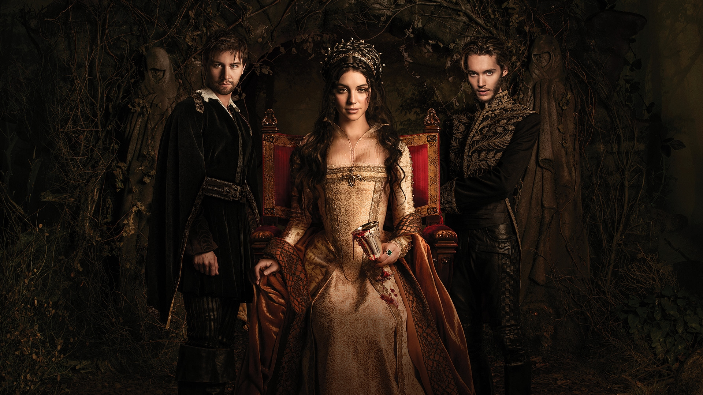
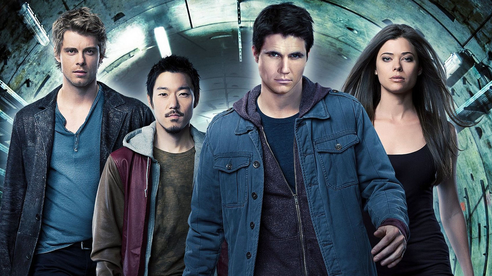

Watch the latest episode
The Vampire Diaries
Gone Girl
Nadia remembers her search for her mother while Elena's
friends come up with a desperate plan to save her life.
Watch the latest episode
Arrow
The Promise
Oliver faces a shocking surprise when he
learns that Slade has come to Starling City.

Watch the latest episode
Reign
Royal Blood
Mary and Bash work against the clock to find the
kidnapped younger children of King Henry and Queen Catherine.

Watch the latest episode
The Tomorrow People
Brother's Keeper
Stephen attempts to restore order in
both his worlds after he gets shocking news.